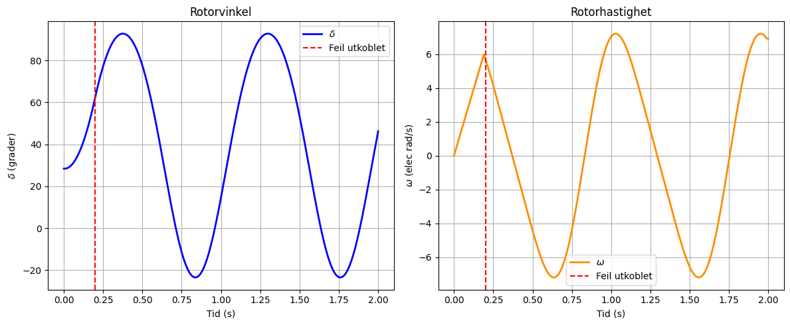

Euler-metoden#
Gitt differensialligningen \(\frac{dy}{dt}=f(t,y)\) med startbetingelsen \(y(t_0)=y_0,\) kan Euler-metoden brukes til å beregne en tilnærmet løsning ved diskrete tidspunkter. For et tidssteg \(h\) beregnes neste verdi som
Tidspunktet oppdateres samtidig som
Algoritme#
Start med kjente verdier \(t_0\) og \(y_0\).
Beregn stigningstallet:
\( f(t_n,y_n) \)
Beregn neste verdi:
\( y_{n+1}=y_n+h\,f(t_n,y_n) \)
Gjenta prosessen for hvert tidssteg.
Euler-metoden med eksakt verdi#
Gitt
\( \frac{dy}{dx}=2x \)
med startbetingelse
\( y(1)=1 \)
og steglengde
\( h=0.1. \)
Euler-formelen er
\( y_{n+1}=y_n+h\,f(x_n) \)
der
\( f(x)=2x. \)
n |
x_n |
y_n (Euler) |
Utregning |
Eksakt verdi y(x_n)=x_n² |
Feil |
|---|---|---|---|---|---|
0 |
1.0 |
1.00 |
Startverdi |
1.00 |
0.00 |
1 |
1.1 |
1.20 |
y₁ = 1.00 + 0.1·(2·1.0) = 1.20 |
1.21 |
0.01 |
2 |
1.2 |
1.42 |
y₂ = 1.20 + 0.1·(2·1.1) = 1.42 |
1.44 |
0.02 |
3 |
1.3 |
1.66 |
y₃ = 1.42 + 0.1·(2·1.2) = 1.66 |
1.69 |
0.03 |
4 |
1.4 |
1.92 |
y₄ = 1.66 + 0.1·(2·1.3) = 1.92 |
1.96 |
0.04 |
5 |
1.5 |
2.20 |
y₅ = 1.92 + 0.1·(2·1.4) = 2.20 |
2.25 |
0.05 |
Resultat#
Euler-metoden gir
\( y(1.5)\approx 2.20 \)
mens den eksakte løsningen er
\( y(1.5)=2.25. \)
Feilen blir
\( e=2.25-2.20=0.05. \)
Euler-metoden for svingligningen#
Euler-metoden for svingligningen er en modifisert Euler-metode (midpoint/leapfrog-formulering) anvendt på svingligningen.
Svingligningen kan skrives som
Vi innfører vinkelhastigheten
\( \omega=\frac{d\delta}{dt}, \)
slik at ligningen splittes i to førsteordens differensialligninger:
$ \frac{d\delta}{dt}#
\omega $
og
$ \frac{d\omega}{dt}#
\frac{\pi f}{H}P_a. $
Oppdatering#
Euler-metoden gir da oppdateringene
$ \omega_{n+1}#
\omega_n + h\frac{\pi f}{H}P_{a,n} $
og
$ \delta_{n+1}#
\delta_n + h\omega_n. $
Her er
\(\delta_n\) rotorvinkelen ved tidspunkt \(t_n\)
\(\omega_n\) hastighetsavviket ved tidspunkt \(t_n\)
\(P_{a,n}\) akselerasjonseffekten ved tidspunkt \(t_n\)
\(h\) tidssteget
Disse ligningene brukes iterativt for å beregne rotorvinkel og hastighet gjennom en transient.
Euler-metoden#
I denne metoden bestemmes endringen i rotorvinkelen over korte tidsintervaller. Følgende antakelser gjøres:
Den akselererende effekten \(\Delta P\) ved begynnelsen av et tidsintervall antas konstant fra midten av forrige intervall til midten av det aktuelle intervallet.
Vinkelhastigheten \(\omega\) antas konstant gjennom hele tidsintervallet og beregnes for midtpunktet av intervallet.
Endring i vinkelhastighet#
Fra svingeligningen
fås
Over tidsintervallet \(\Delta t\) blir endringen i vinkelhastighet
eller
Dette uttrykket brukes til å oppdatere rotorens hastighet fra ett halvsteg til det neste.
Endring i rotorvinkel#
Rotorvinkelens endring i intervallet fra tid \((n-2)\) til \((n-1)\) er
Siden \(\omega_{n-\frac12}\) antas konstant gjennom intervallet,
Dermed fås
og
Numerisk algoritme#
For hvert tidssteg utføres følgende beregninger:
Beregn akselererende effekt
Oppdater vinkelhastigheten
Oppdater rotorvinkelen
Over det (n)-te intervallet er endringen i rotorvinkelen
Tilsvarende er
Ved å subtrahere disse uttrykkene fås
Fra hastighetsoppdateringen i punkt-for-punkt-metoden har vi
Innsetting gir
Dermed fås den rekursive ligningen
Dette er grunnlikningen for den klassiske punkt-for-punkt-metoden. Den viser at endringen i rotorvinkel i hvert nytt tidsintervall kan beregnes direkte fra:
den forrige vinkelendringen \(\Delta\delta_{n-1}\),
den akselererende effekten \(\Delta P_{n-1}\),
treghetskonstanten \(M\),
tidssteget \(\Delta_t\).
Når \(\Delta\delta_n\) er funnet, oppdateres rotorvinkelen fra
Fysisk betydning#
Metoden følger den naturlige årsakskjeden i kraftsystemet:
Den mekaniske og elektriske effektubalansen bestemmer rotorens akselerasjon. Akselerasjonen gir en endring i rotorhastigheten, og rotorhastigheten bestemmer deretter hvordan rotorvinkelen utvikler seg med tiden.
Ved å gjenta disse beregningene for små tidsintervaller kan den transiente rotorvinkelresponsen bestemmes numerisk uten å løse svinglikningen analytisk.

Fremgangsmåte#
Bestem \(\Delta_t\) (Vanligvis 0.05 s.)
Finn M
Beregn \(\frac{(\Delta_t)^2}{M}\)
Finn normal driftsvinkel; \(\delta_0 = sin^{-1}\big(\frac{P_m}{P_max}\big)\)
Finn \(\Delta P\), rett etter feilen; \(\Delta P = Pm - P_{max,feil} sin \delta_0\)
Den første verdien av den akselererende effekten refererer til midten av det foregående intervallet, mens den andre verdien refererer til midten av intervallet som analyseres: Bruk \(\Delta P = \frac{\Delta P}{2}\)
Finn ny \(\Delta\delta_n\):
Stevenson-tabell for eksempel 14.8#
Gitt
\( P_m = 1.0 \)
Før feilen:
\( P_e = 2.10\sin\delta \)
Under feilen:
\( P_e = 0.808\sin\delta \)
Etter feilutkobling:
\( P_e = 1.50\sin\delta \)
Startvinkel:
$ \delta_0#
\sin^{-1}!\left(\frac{1}{2.10}\right)#
28.44^\circ $
Stevenson-konstant:
$ \frac{(\Delta t)^2}{M}#
8.33 $
med
\( \Delta t=0.05\text{ s}. \)
Den kritiske vinkelen fra EAC er
$ \delta_{cr}#
82.6^\circ. $
\( \begin{array}{rrrrrrr} t & \delta & P_{\max} & P_e & \Delta P & 8.33\Delta P & \Delta\delta\\ \hline 0.00 & 28.44 & 0.808 & 0.385 & 0.308^* & 2.57 & 0.00\\ 0.05 & 31.01 & 0.808 & 0.416 & 0.584 & 4.87 & 2.57\\ 0.10 & 38.45 & 0.808 & 0.502 & 0.498 & 4.15 & 7.44\\ 0.15 & 50.04 & 0.808 & 0.619 & 0.381 & 3.17 & 11.59\\ 0.20 & 64.80 & 0.808 & 0.731 & 0.269 & 2.24 & 14.76\\ 0.25 & 81.80 & 0.808 & 0.800 & 0.200 & 1.67 & 17.00\\ 0.30 & 100.47 & 0.808 & 0.795 & 0.205 & 1.71 & 18.67 \end{array} \)
* Første verdi er Stevenson-gjennomsnittet
$ \Delta P#
\frac{0+(1-0.808\sin28.44^\circ)}{2}#
0.308. $
Bestemmelse av kritisk klareringstid#
Fra EAC:
\( \delta_{cr}=82.6^\circ \)
Fra Stevenson-tabellen:
\( \delta(0.25)=81.8^\circ \)
$
\delta(0.30)=100.47^\circ $
Lineær interpolasjon gir
$ t_{cr}#
0.25 + \frac{82.6-81.8} {100.47-81.8} (0.05) $
$ t_{cr}#
0.252\text{ s} $
altså
\( \boxed{t_{cr}\approx0.25\text{ s}} \)
og
\( \boxed{\delta_{cr}\approx82.6^\circ}. \)
Komplett regneeksempel med Euler-metoden#
Vi bruker svingligningen
$ \frac{d^2\delta}{dt^2}#
\frac{\pi f}{H}P_a $
og innfører
\( \omega=\frac{d\delta}{dt}. \)
Da får vi to førsteordens ligninger:
\( \frac{d\delta}{dt}=\omega \)
$ \frac{d\omega}{dt}#
\frac{\pi f}{H}P_a. $
Data#
Anta
\( f=50 \text{ Hz} \)
\( H=5 \text{ s} \)
\( P_a=0.2 \text{ pu} \)
\( \delta_0=30^\circ \)
\( \omega_0=0 \)
\( \Delta t = 0.05 \text{ s} \)
Først beregnes konstanten
$ \frac{\pi f}{H}#
\frac{\pi \cdot 50}{5}#
31.416 $
Dermed blir
$ \frac{d\omega}{dt}#
31.416\cdot0.2#
6.2832 \text{ rad/s}^2. $
Euler-formlene er
$ \omega_{n+1}#
\omega_n + \Delta t \frac{\pi f}{H}P_a $
$ \delta_{n+1}#
\delta_n + \Delta t,\omega_n. $
Steg 1#
Hastighet#
$ \omega_1#
0 + 0.05(6.2832) $
$ \omega_1#
0.3142 \text{ rad/s} $
Rotorvinkel#
$ \delta_1#
30^\circ + 0.05(0) $
$ \delta_1#
30^\circ $
Steg 2#
Hastighet#
$ \omega_2#
0.3142 + 0.05(6.2832) $
$ \omega_2#
0.6283 \text{ rad/s} $
Rotorvinkel#
Rotorvinkelen må beregnes i radianer.
$ \delta_1#
30^\circ#
0.5236 \text{ rad} $
Dermed
$ \delta_2#
0.5236 + 0.05(0.3142) $
$ \delta_2#
0.5393 \text{ rad} $
Omregnet til grader:
$ \delta_2#
30.90^\circ $
Steg 3#
Hastighet#
$ \omega_3#
0.6283 + 0.05(6.2832) $
$ \omega_3#
0.9425 \text{ rad/s} $
Rotorvinkel#
$ \delta_3#
0.5393 + 0.05(0.6283) $
$ \delta_3#
0.5707 \text{ rad} $
$ \delta_3#
32.70^\circ $
Resultater#
Tid (s) |
\(\omega\) (rad/s) |
\(\delta\) (grader) |
|---|---|---|
0.00 |
0.0000 |
30.00 |
0.05 |
0.3142 |
30.00 |
0.10 |
0.6283 |
30.90 |
0.15 |
0.9425 |
32.70 |
Vi ser at et konstant positivt akselererende effektbidrag (\(P_a>0\)) gir økende hastighetsavvik \(\omega\) og dermed stadig raskere økning av rotorvinkelen \(\delta\).
Euler-metoden brukt på svingligningen#
Anta at
$ \frac{d^2\delta}{dt^2}#
\frac{\pi f}{H}P_a $
og at \(P_a\) er konstant.
import numpy as np
import matplotlib.pyplot as plt
# --------------------------
# Systemdata (Eksempel 14.7)
# --------------------------
f = 50.0 # Hz
H = 5.0 # MJ/MVA
Pmax = 2.10
delta0_deg = 28.44
delta0 = np.radians(delta0_deg)
Pm = Pmax * np.sin(delta0)
# --------------------------
# Simuleringsparametere
# --------------------------
dt = 0.01
t_clear = 0.20
t_end = 2.0
# --------------------------
# Konstant i svingligningen
# --------------------------
M = H / (np.pi * f)
# --------------------------
# Tidsakse
# --------------------------
N = int(t_end / dt)
t = np.arange(N + 1) * dt
# --------------------------
# Lagringsvektorer
# --------------------------
delta = np.zeros(N + 1)
omega = np.zeros(N + 1)
Pe = np.zeros(N + 1)
Pa = np.zeros(N + 1)
delta[0] = delta0
# ---------------------------------------
# Første vinkelendring
# ω(-1/2) = 0 => Δδ0 = 0
# ---------------------------------------
Delta_delta_prev = 0.0
# Første punkt
delta[1] = delta[0]
# ---------------------------------------
# Swing curve-metoden
# (modifisert Euler / leapfrog)
# ---------------------------------------
for n in range(1, N):
# Feil på systemet
if t[n] < t_clear:
Pe[n] = 0.0
# Etter feilutkobling
else:
Pe[n] = Pmax * np.sin(delta[n])
Pa[n] = Pm - Pe[n]
Delta_delta = (
Delta_delta_prev
+ (Pa[n] / M) * dt**2
)
delta[n + 1] = delta[n] + Delta_delta
omega[n] = Delta_delta / dt
Delta_delta_prev = Delta_delta
omega[N] = Delta_delta_prev / dt
# Effektverdier for plotting
Pe[0] = 0.0
Pa[0] = Pm
# Konverter til grader
delta_deg = np.degrees(delta)
# --------------------------
# Resultater
# --------------------------
print(f"Pm = {Pm:.4f} pu")
print(f"t_clear = {t_clear:.3f} s")
print("\nTid(s) δ(deg) ω(rad/s)")
print("-" * 30)
for i in range(0, len(t), 10):
print(
f"{t[i]:6.2f} "
f"{delta_deg[i]:8.2f} "
f"{omega[i]:10.4f}"
)
# --------------------------
# Plot
# --------------------------
fig, (ax1, ax2) = plt.subplots(
1,
2,
figsize=(12, 5)
)
# Rotorvinkel
ax1.plot(
t,
delta_deg,
color="blue",
linewidth=2,
label=r"$\delta$"
)
ax1.axvline(
t_clear,
color="red",
linestyle="--",
label="Feil utkoblet"
)
ax1.set_title("Rotorvinkel")
ax1.set_xlabel("Tid (s)")
ax1.set_ylabel(r"$\delta$ (grader)")
ax1.grid(True)
ax1.legend()
# Hastighet
ax2.plot(
t,
omega,
color="darkorange",
linewidth=2,
label=r"$\omega$"
)
ax2.axvline(
t_clear,
color="red",
linestyle="--",
label="Feil utkoblet"
)
ax2.set_title("Rotorhastighet")
ax2.set_xlabel("Tid (s)")
ax2.set_ylabel(r"$\omega$ (elec rad/s)")
ax2.grid(True)
ax2.legend()
plt.tight_layout()
plt.show()
Pm = 1.0001 pu
t_clear = 0.200 s
Tid(s) δ(deg) ω(rad/s)
------------------------------
0.00 28.44 0.0000
0.10 36.54 3.1419
0.20 62.64 5.6979
0.30 87.18 2.4401
0.40 92.26 -1.0109
0.50 77.58 -4.4279
0.60 44.78 -6.9632
0.70 4.60 -6.2911
0.80 -21.24 -1.8232
0.90 -17.03 3.7460
1.00 14.68 7.0305
1.10 54.76 6.2808
1.20 83.32 3.2122
1.30 92.84 -0.2366
1.40 82.58 -3.6797
1.50 53.39 -6.5828
1.60 13.20 -6.8174
1.70 -17.76 -3.0441
1.80 -20.77 2.5790
1.90 5.99 6.6388
2.00 46.24 6.9110
